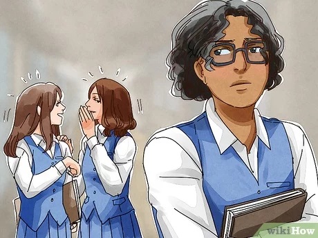

Pranav Puri
Let me tell you a story—my story. A few years ago, something happened that changed everything for me, shaping who I am today.
Why am I sharing this? Because those moments, however difficult, brought out the best version of me. And I think it’s time
for the world to hear it.
This story begins in Ludhiana, a bustling city in Punjab, India, where I spent the first 18 years of my life in the same home.
Then, life took a major turn. I moved halfway across the world to Canada, alone, with no clear idea of what the future held for me.
This is the story of a boy who dreamed big but was paralyzed by fear—too scared to step up, too scared to be seen. He was afraid of
his parents, of making friends (which, by the way, he never had), and even of facing the world around him.
Now, let’s talk about the key players: my parents, my younger brother, my grandparents, and my uncle and aunt. But, of course, the hero
of this story? That’s me (I mean, what’s a story without a hero, right?). Whether I managed to overcome these fears or not—well, that’s
something you’ll have to decide by the end.
Expect a bit of everything—fun, drama, maybe even some action. If this were a movie, I’d make sure it had a little something for everyone.
So, buckle up and let’s see how this unfolds.
LET’S START!
THE BOY!
Since childhood, all this boy ever heard about was money—how much there was, or more accurately, how much there wasn’t. Growing up in a middle-class family, money was a constant topic of conversation. His father worked hard to provide for everyone: his wife, two sons, grandparents, and of course, the boy himself. They made sure he attended a good school, had nutritious meals, and, as most parents dream, developed into a well-mannered individual. They enrolled him in one of the top-rated schools in the state, known for its infrastructure, facilities, and reputation. But of course, quality comes at a price—a price the family could barely afford. The high fees drained his parents financially and emotionally, day by day.
Most of the students at the school came from wealthy families. So how did this boy and his younger brother manage to attend? Their father was not only a teacher there but also a coordinator, which made it possible. Yet, even though he was part of this elite institution, his experience was far from pleasant. Each day, he was bullied, humiliated, and often left out by the very people he tried to befriend. Not a single day brought him joy or excitement about going to school. His so-called friends avoided him, and he was routinely excluded from social events, like parties that the whole class was invited to—except him. Worst of all, they would talk about these plans right in front of him, as if he didn’t exist. 
Why did everyone treat him this way? The main reason: his father. Although his father was one of the best teachers in the school, he was also known for being incredibly strict. Students were terrified to attend his classes, though those who actually did learned that he was like a coconut—tough on the outside, but soft on the inside. His teaching skills were top-notch, but rumors about his strictness spread like wildfire, making the boy fear the day his father might end up teaching him. Luckily, school policy forbade parents from teaching their own children. But once, when a teacher called in sick, his father had to fill in. That one class erased all the boy’s fears—his father wasn’t as scary as the rumors suggested.
Beyond his father’s reputation, the boy faced other challenges. He was painfully thin, not conventionally good-looking, and struggled with poor academic performance. His appearance made him an easy target for ridicule, and he often felt invisible, especially around the girls in his class. They would avoid him, adding to his feelings of rejection, as if his looks alone made him unworthy of their attention. This constant avoidance chipped away at his confidence, making him feel even more isolated. On top of that, his classmates mocked his family’s financial situation, leaving him feeling small and powerless. Each day eroded his self-esteem, but he never dared to speak to his parents about any of it, fearing it would hurt his father even more. So, how did he survive all of this?
His first love: soccer. No, not a person—soccer was his escape. Whenever he had a spare moment, he would run onto the field and play. By seventh grade, without any formal training, he made it onto the school’s soccer team. But during a crucial match, his mistake cost the team the game and, ultimately, the league. This failure crushed him, but it also pushed his father to enroll him in a soccer academy. There, he met a coach who trained him relentlessly for two hours every day. Slowly but surely, he improved. He became one of the best defenders in the school, though he had no way to prove it to his teammates, who doubted him.
But eventually, he got his chance. On match day, he was subbed onto the field, and not a single opponent could get past him. His teammates, initially skeptical, were stunned by his performance and delighted to have a new star player. That day, they gave him a nickname: "The Wall." In India, school tournaments were a pathway to district and state team selections. Six players from the winning team were chosen to advance—and one of those players was this boy. It was, without a doubt, one of the greatest moments of his life.
 Nah, this was not just it. This was merely a fragment of his complicated life. Struggling academically, this boy was pushed by his parents to join
several tuition classes that consumed almost 4 to 6 hours each day. These sessions were relentless—every single day, sometimes even on weekends—leaving
him with little to no time for himself. He would come home from school, quickly eat, and then it was off to yet another tuition class. While he saw his
younger brother happily playing outside with other kids, he felt like a loser in comparison. Each day, he found himself wishing for just one day off
from the grueling cycle of school and tuition, longing to experience the simple joys that other children enjoyed.
Nah, this was not just it. This was merely a fragment of his complicated life. Struggling academically, this boy was pushed by his parents to join
several tuition classes that consumed almost 4 to 6 hours each day. These sessions were relentless—every single day, sometimes even on weekends—leaving
him with little to no time for himself. He would come home from school, quickly eat, and then it was off to yet another tuition class. While he saw his
younger brother happily playing outside with other kids, he felt like a loser in comparison. Each day, he found himself wishing for just one day off
from the grueling cycle of school and tuition, longing to experience the simple joys that other children enjoyed.But the real struggle lay within those tuition classes. There was a boy—his teacher’s son—who began to harass him. What started as subtle suggestions escalated into demands that left him feeling confused and ashamed. He was forced to do things he was too ashamed to speak about. The trauma from these experiences lingered, casting a long shadow over his young life. Every moment was fraught with a suffocating silence, as he yearned to share his pain, to find someone who could understand, but the weight of shame held him captive.
Moving forward, his home life was equally challenging. Conversations revolved around money, and the word seemed to seep into every topic. Even when his mother scolded him for poor grades, she somehow tied it back to financial concerns, leaving him bewildered. Communicating with his parents was a minefield; he felt he had to weigh his words carefully, fearing their reactions. They raised him in an atmosphere of fear, where even the simplest conversations required him to anticipate a myriad of possible outcomes. Any question he posed was met with anger instead of understanding, solidifying his fear that he could never express himself freely. There were countless instances when he would collapse onto the sofa, hugging its cushions tightly, crying silently because he felt utterly alone. Every challenge he faced became a solitary battle, ultimately shaping him into a resilient individual. You might be tempted to view his parents as the villains in this narrative, but that wasn’t entirely accurate. The home was filled with unspoken tensions, with the grandparents treating his father poorly despite all he did for them. He was the dutiful son, always ready to assist, yet his parents received little in return. The grandparents favored his uncle and aunt, giving them the best of everything while his father received only scraps. His mother was not spared either; she was often treated as a mere maid, her hard work dismissed as insignificant.
Despite the chaos, his parents shared a bond of love and trust that transcended the negativity surrounding them. The boy would listen to his mother’s grievances about how his grandparents treated his father, and though she often expressed herself in anger, they would still share a bed at the end of the day, united in their struggles. His mother would recount stories of the unfair treatment his father endured, sometimes breaking down in tears. Every morning, she would leave for work at 9 a.m. after preparing meals for everyone and return home around 6 p.m. But her challenges didn’t end there; the grandparents would issue orders as soon as she walked through the door, demanding more from her than she could bear. Exhausted, she sometimes seemed on the verge of collapsing, needing help just to eat. His father would occasionally have to lift her in his arms and feed her, forcing nourishment into her tired body.
Witnessing this cycle of exhaustion and neglect made the boy numb, often leaving him in a corner to silently observe his mother’s struggles. These experiences led him to a realization: his family consisted only of four members—himself, his younger brother, and his parents. From that moment, he resolved to become one of the wealthiest individuals on the planet, vowing to create a life of comfort and security for his family. He dreamed of being able to point to anything his parents desired and say, “Just this, I’ll get it for you,” regardless of the cost.
Despite these trials, he found solace in a connection that blossomed during his 11th-grade year amidst the COVID outbreak when education shifted online. He met a girl at his tuition class who was quiet and reserved, focused on studying even when it wasn't her favorite subject. In one of the class's WhatsApp groups, he responded to a physics question but made an error. To his surprise, the shy girl, who rarely spoke up, corrected him. They engaged in a friendly debate, both introverts navigating the complexities of their lives and discovering they lived just two intersections apart. Though they hadn’t met in person yet, their conversations flowed effortlessly for hours, weaving a connection that neither had anticipated.
After months of chatting, they finally decided to meet. Excitement coursed through him as he vividly recalls their first encounter—how she leaped off the back of the bike to offer him a handshake instead of a hug, both of them too shy to embrace the first person they genuinely liked. He still remembers how awkward their initial conversation felt, yet how beautiful she appeared that day, wearing a lovely long pink and white dress. This moment marked the beginning of one of the happiest chapters in his life, completely unaware of the turning point destiny had in store for him.
THE END
Appearance
Adjust font size here: